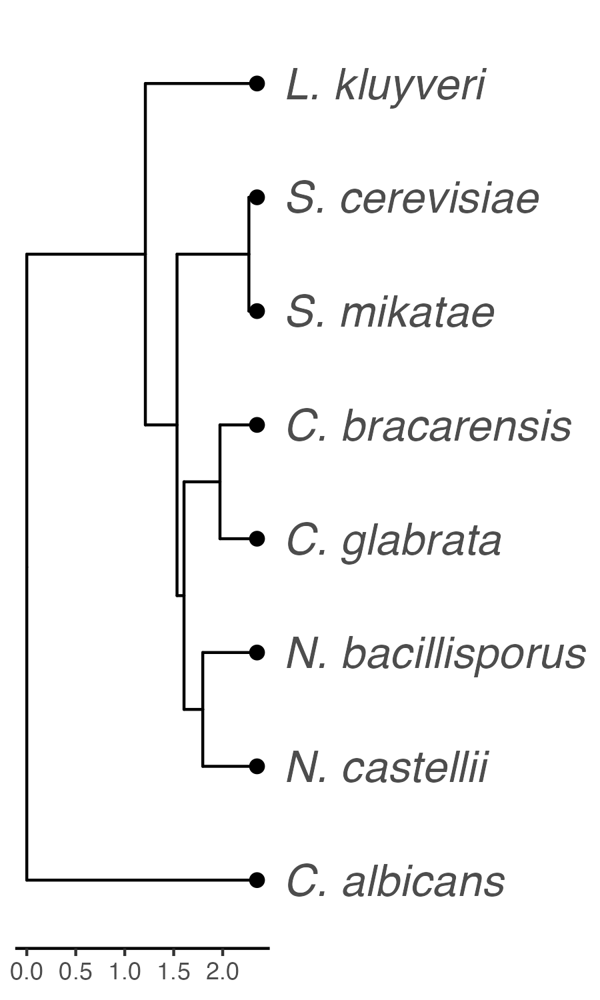

require(tidyverse)
require(cowplot)Plot PADDLE predictions for diverse Pho4 orthologs
Goal
- Plot PADDLE predicted activation potentials for multiple Pho4 orthologs.
- Also generate some accompanying figures like the gene/species tree.
Pho4 annotation
In this analysis, we included 14 Pho4 orthologs. It would be useful to have a common set of annotations for them in BED format, including the location of the bHLH domain and coordinates and lengths of the P2ID.
anno <- read_csv("../data/annot/20241029-Pho4-ortholog-annotation.csv",
comment = "#") %>%
mutate(len = end - start + 1)Rows: 30 Columns: 4
── Column specification ────────────────────────────────────────────────────────
Delimiter: ","
chr (2): Pho4, feature
dbl (2): start, end
ℹ Use `spec()` to retrieve the full column specification for this data.
ℹ Specify the column types or set `show_col_types = FALSE` to quiet this message.Phylogeny
We also need the phylogeny for the species to organize the plots. The species tree was generated from Shen et al. 2018 data. The code and trees generated are documented in ../phylogeny. Plot is linked here 
Set the species order to match the tree tip order
sps.order <- c("L. kluyveri", "S. cerevisiae", "S. mikatae", "C. bracarensis",
"C. glabrata", "N. bacillisporus", "N. castellii", "C. albicans")PADDLE prediction
Import data
my_read_paddle <- function(name){
# read the file
tmp <- read_csv(name, col_types = cols())
# extend the scores to the two ends
tmp <- tmp[c(rep(1, 26), 1:nrow(tmp), rep(nrow(tmp), 26)),] %>%
mutate(Pos = 1:n(), rel_pos = Pos/n())
}
files = dir("../output/", pattern = "20240316*")
names(files) <- str_split(files, pattern = "-", simplify = TRUE)[,2]
dat <- map_dfr(files, \(f) my_read_paddle(paste0("../output/", f)), .id = "Pho4")Plotting
#act.colors <- c("gray80", "royalblue1", "darkblue")
act.colors <- RColorBrewer::brewer.pal(n = 3, name = "Blues")
act.colors[1] = "gray80"
names(act.colors) <- c("no act", "medium", "strong")
tile_height = 0.5select.sps <- c("LkluPho4", "ScerPho4", "SmikPho4", "CbraPho4",
"CglaPho4", "NbacPho4", "NcasPho4", "CalbPho4")
p1 <- dat %>%
filter(Pho4 %in% select.sps) %>%
mutate(Pho4 = factor(Pho4, levels = rev(select.sps)),
paddle = cut(Z_score, breaks = c(-0.5, 4, 6, 12),
labels = c("no act", "medium", "strong"))) %>%
ggplot(aes(x = Pos, y = Pho4, height = tile_height)) +
geom_tile(aes(fill = paddle), width = 2, linewidth = 0.5) +
geom_tile(aes(x = (start + end)/2, y = Pho4, width = len),
data = filter(anno, feature == "bHLH", Pho4 %in% select.sps),
height = tile_height, fill = "yellowgreen") +
scale_fill_manual("Activation", values = act.colors) +
theme_cowplot() +
theme(
axis.line = element_blank(),
axis.title = element_blank(),
legend.position = "none"
)
ggsave("../output/img/20241210-diverse-Pho4-PADDLE-prediction-with-DBD.png",
p1, width = 4, height = 3.5) P2ID length
p2 <- anno %>%
filter(Pho4 %in% select.sps, feature == "P2ID") %>%
mutate(Pho4 = factor(Pho4, levels = rev(select.sps))) %>%
ggplot(aes(x = len, y = Pho4)) +
geom_col(fill = rgb(182, 215, 168, maxColorValue = 255),
width = tile_height) +
geom_text(aes(x = 20, label = len)) +
theme_cowplot() +
theme(
axis.line = element_blank(),
axis.title = element_blank(),
axis.text.y = element_blank(),
axis.ticks.y = element_blank(),
legend.position = "none"
)
ggsave("../output/img/20241210-diverse-Pho4-P2ID-length.png",
p2, width = 2, height = 3.5)